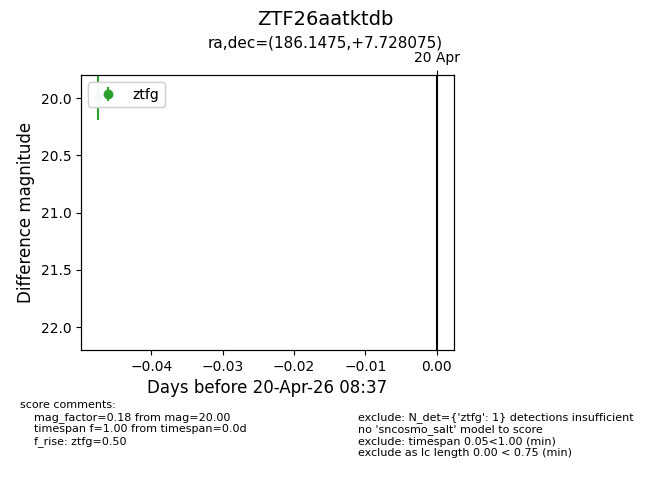
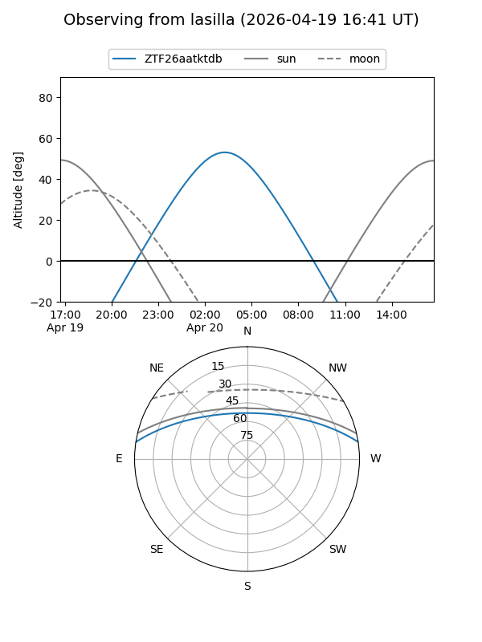
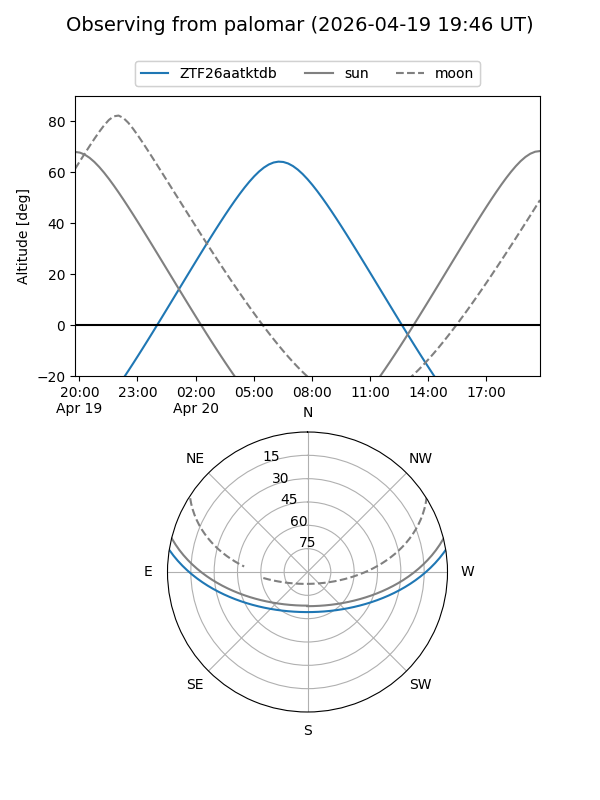

ZTF26aatktdb
Target ZTF26aatktdb at 2026-04-20 08:47
Aliases and brokers:
FINK: link
Lasair: link
ALeRCE: link
alt names
ZTF26aatktdb (ztf,fink_ztf)
Coordinates:
equatorial (ra, dec) = 186.1475,+7.72807
equatorial (HMS+DMS) = 12:24:35.41,+07:43:41.07
galactic (l, b) = (283.5422,+69.58280)
Flags:
Photometry:
last ztfg=20.00
1 ztfg detections
Lightcurve

Visibility


Additional plots